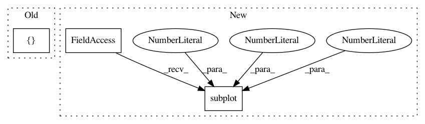

322771495bde9200d365c8d536e0724f1075dff9,tslearn/docs/examples/plot_dtw.py,,,#,20
Before Change
plt.figure()
gs = GridSpec(1, 2, width_ratios=[2, 1], height_ratios=[1, 1])
ax0 = plt.subplot(gs[0])
ax0.plot(numpy.arange(sz), dataset_scaled[0, :, 0])
ax0.plot(numpy.arange(sz), dataset_scaled[1, :, 0])
After Change
plt.subplot2grid((1, 3), (0, 0), colspan=2)
plt.plot(numpy.arange(sz), dataset_scaled[0, :, 0])
plt.plot(numpy.arange(sz), dataset_scaled[1, :, 0])
plt.subplot(1, 3, 3)
plt.imshow(matrix_path, cmap="gray_r")
plt.tight_layout()
plt.show()
In pattern: SUPERPATTERN
Frequency: 3
Non-data size: 3
Instances
Project Name: rtavenar/tslearn
Commit Name: 322771495bde9200d365c8d536e0724f1075dff9
Time: 2017-06-20
Author: romain.tavenard@univ-rennes2.fr
File Name: tslearn/docs/examples/plot_dtw.py
Class Name:
Method Name:
Project Name: scipy-lectures/scipy-lecture-notes
Commit Name: 6d87b5fa03420a908fbf7e72868307dd6bc3223f
Time: 2016-09-15
Author: gael.varoquaux@normalesup.org
File Name: intro/matplotlib/examples/plot_multiplot.py
Class Name:
Method Name:
Project Name: nipy/dipy
Commit Name: 749855e9d1b5bd1aa7b46db144503922fbc0a336
Time: 2013-08-06
Author: matthieu.dumont@usherbrooke.ca
File Name: doc/examples/brain_extraction_dwi.py
Class Name:
Method Name: